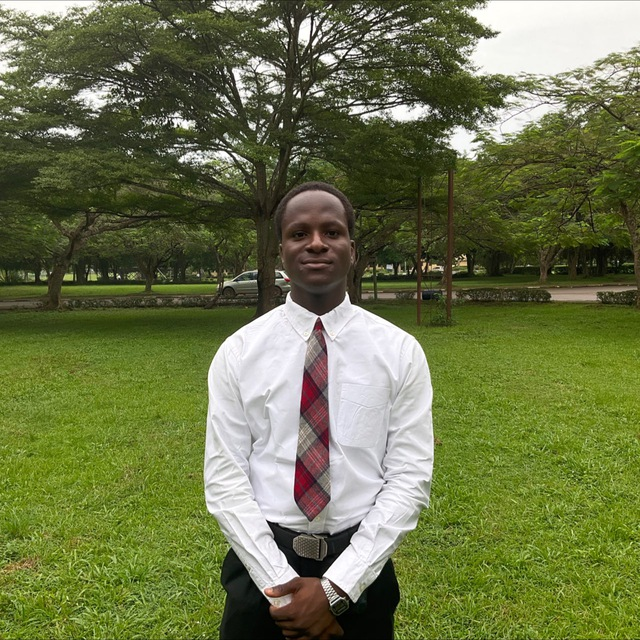

Ibiyemi Olaoluwa David

Summary
An Enthusiastic Electrical and Electronics Engineering student with a foundation in programming. Skilled in designing electronic circuits and writing code to improve system performance. Looking to apply technical knowledge and problem-solving skills in real-world projects and gain hands-on experience in the field.
Education
Covenant University | Bachelor of Engineering in Electrical and Electronics Engineering | Sango Ota, Ogun State | June 2024 – Present | Expected to graduate July 2026
- Cumulative GPA: 4.91/5.00
- Member of Google Developer Student Clubs (GDSC) Covenant University
- Relevant course work: Introduction to C programming, Applied Computer Programming, Introduction to networking, Electric Circuit Theory 1, Introduction to Arduino Software
International School Ibadan University of Ibadan, Ibadan, Oyo State
Work Experience
SIWES Training Sango Ota, Ogun State | July 2023-September 2023
- Led in Group projects, Improved problem solving and analytic skills
- Worked with deadlines which built up my speed and response to assignments given
Nestle World Clean-up Day Aleshinoye, Ibadan, Oyo State | November 2023
Skills
- Programming skills: Basic of C and python programming, Basics of Frontend and web-development {HTML, CSS, JavaScript}.
- Circuit Design and analysis skills: Multisim, Arduino.
- Analytical skills: Critical Thinking (SAT:1400), Attention to detail, Reporting, Research, Interpretation.
- Communication skills: Active listening, Written and Oral communication, IELTS: 8.
Others